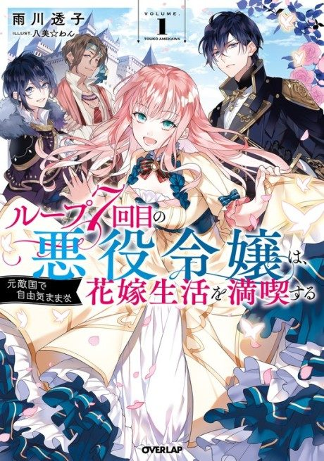

7th Time Loop: The Villainess Enjoys a Carefree Life Married to Her Worst Enemy!
ループ7回目の悪役令嬢は、元敵国で自由気ままな花嫁生活を満喫する
After the anime, read the light novel from Chapter 31.
7.5AniList score
—Animeter, no votes yet
12episodes
Anime finished. Where does the story go next?
Start at Chapter31
To continue after the anime, start the manga adaptation at Chapter 31.
130ongoing
Season 1Start reading here